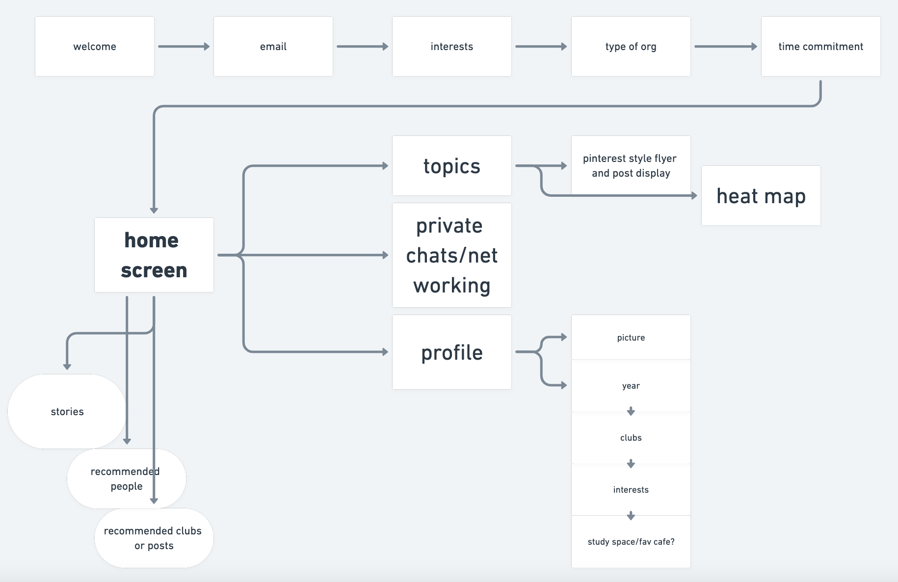
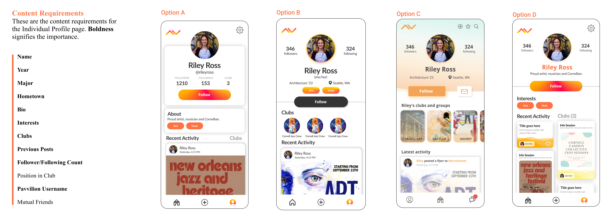

CONTEXT
In January of my internship at the Cornell Tech Policy Lab, I was tasked to create a new
social media app geared towards college students. Working closely with 3 other designers
and engineers, I designed Pavvilion which provides a centralized location for students
to find opportunities, meet people with similar interests, and find clubs and
organizations that fit their preferences.
Timeline
I’ve been designing Pavvilion in three phases — the MVP, Iteration 2, and Iteration 3
before the full release in Fall 2022 — in order to make sure that we have the chance
to iterate on our work multiple times based on user feedback. In this case study, I’ll
be focusing on how I worked on developing the MVP (Minimum Viable Product).
USER RESEARCH
Since the task was very broad, it was important to gain a better understanding of the social
scene on campus and the challenges that students face in trying to navigate it. We conducted
several interviews with individuals at Cornell and other colleges. Our goals were to:
- Understand how users make friends and find people who share the same interests
- Discover how students find information on campus as underclassmen vs. upperclassmen
- Uncover pain points and product opportunities
Key Findings

Understanding the User
To really understand the target users better, I created a couple of personas so that
I could relate more to the user’s needs, wants, thoughts, and priorities.

Upperclassmen Student (Clarrissa)
- Have an established friend group on campus and are part of clubs that relate to their interests
- Want to get to know more people but are less likely to take the initiative to reach out
- Find out about opportunities on campus by word of mouth or based on who they follow on social media
Underclassmen Student (Chris)
- Are actively looking to meet new people and are willing to go through competitive club recruitment processes to find interest groups
- Will go out of their way to reach out to people in class or from clubs to meet up with them
- Find out about opportunities on campus via campus events (like Club Fair) or based on posters/signs
THE PEOPLE PROBLEM
Students want to meet new people that share their interests and find new opportunities
on campus but it’s difficult because:
- There is no centralized location on campus to find information (multiple social media
sites, physical advertising on campus, word of mouth)
- Don’t have a way to gage competitiveness, culture, or commitment level of a club
EXPLORING SOLUTIONS
1) Coffee Chats
Students who share similar interests are paired together for a weekly coffee chat

2) Interest Groups
Students can join group chats based on the topics that they are most interested in (e.g.
a group chat for country singers)

Information Board
Students and clubs can post any information that can be seen by the entire college community

Pursuing a Solution
I initially loved the coffee chats feature, as it makes learning about a new club or making
new friends a more personal experience where you are guaranteed to have interests in
common with whom you are matched with. After I sketched out more ideas though, I felt
that the information board best solves the challenge that students are facing on campus.
Thus, I decided to move forward with the INFORMATION BOARD because:
-
It gives both upperclassmen a platform to spread the word about information
more quickly and underclassmen a way to quickly learn about information.
-
It can minimize the amount of apps users open use as they research clubs or look
for other opportunities or information.
-
It caters to students with content that is student-driven.
-
Provides insight into non-tangible aspects that students look for like club culture
and commitment level.
DETERMINING CONTENT FOR THE MVP
In order to make it easier for the engineers on the team to build and to give us
multiple opportunities to iterate based on user feedback, we worked on creating
a minimum viable product that only contains the key features for the app.
Since I was working with a team of designers, my role was to build the home page
and profile page as well as contribute a few things to the design system and login sequence.
After determining the content, I considered the information architecture for the MVP
and created a chart to map out how the user would get from one page to the next and
how each feature would be integrated into the interface of the app.

DESIGNING THE HOME PAGE
After understanding the content requirements as well as the three different main
pages and their hierarchy, I explored different ways that the posts could be displayed
on the information board.

Explorations A & B were very similar to other popular social media platforms such as
Instagram and Facebook, but they made it more difficult for a user to quickly
explore different posts.
Thus, I decided to pursue Option C because the small size of the post prioritizes discovery
and exploration. However, I decided to keep option A in the case the user wants to click
on a post and view it in more detail.
After exploring layouts, I considered different visual styles for the homepage.
We wanted the mood of the app to be fun and casual, het geared towards Cornell's pre-professional culture.
I eliminated A since it felt more formal and slightly more professional, and didn’t
fit best with the mood we were aiming for while B didn’t feel professional enough.
Thus, I decided to go with C and D since they were fun and casual but did not look unprofessional.
Option C is what we built for the MVP and Option D will be used for Iteration 3 (it is more
difficult to code for our engineers), since it builds on some of Pavvilion’s other UI
elements like the waves and color tagging system, found in the login sequence.
Once I determined the best layout and visual style for the homepage, I explored
different ways of displaying a single post.
I eliminated C because depending on the picture, it was difficult to read the text overlay
and some users did not associate the caption with the correct post. A did not fit with
the mood of the app — it looked more formal instead of fun. Farther down the line, B
could contribute to content moderation issues since the name of the individual is
not associated with the post.
D, E, and F all fit the visual style and mood of the app the best. I decided to go with
Option D since it does not contain tags. If the user puts several tags on one post,
this would be difficult to display well on the post since it is so small on the screen.
DESIGNING THE PROFILE PAGE
When designing the profile page, there were two profiles to consider — club profiles
and individual profiles. I started with club profiles.

I considered the content requirements for the club profile page and decided to focus on
items that would help provide a brief overview of the club so that the user could make
a decision based on just the profile if they’re interested in attending an event.
Afterwards, I considered 3 explorations. I eliminated B because the
gradient made it difficult to read the icons and the text overlaid on top.
A and C both provided a summary for the club, but C made it easier for a
user to scan since the text size was bigger and the icons made information
such as the acceptance rate easy to recognize. Thus, I chose Option C.
Next, I focused on building the individual profile.

As for the club profile page, I considered both the content requirements and a few
different explorations. Initially, I included year, major, and hometown in the content
requirements but decided to replace it with a short bio instead so that users
could choose what information they wanted to present about themselves.
I eliminated B as the color and position of the follow button doesn’t draw the user’s
attention to it, and it doesn’t come across as the most important button on
the page.
I eliminated option A because it would require the user to scroll a lot to view several posts,
making it difficult to quickly determine whether or not you'd like to follow someone.
Although option C was visually the most appealing, it was difficult
for our engineers to build. For this reason, I went with Option D.
DESIGNING THE LOGIN SEQUENCE
Since I worked with a team of designers, I focused on creating a couple of pages within
the login sequence - the main page and the "select your interests" page.

I eliminated A as I felt that the different shades of orange did not
tie together well with our branding guidelines. I eliminated D because
the two gradients distracted from the main logo in the center of the page, which I wanted
to highlight the most.
Although I liked the incorporation of the waves in option B
especially since it fits with one of our featured UI elements, I felt that the main screen
did not stand out enough, especially in comparison with the other screens in the login sequence.
To address this, I used the waves in all other pages of the login sequence. Ultimately, though I decided
to go with Option C since it fit best with our branding, equally emphasizes login and
signup, and makes the logo the main focus.
After designing the main page, I exploring different ways for users to select their interests
during the initial sign up sequence.
I initially created option B, but eliminated it because of technical constraints -
it would be too difficult to code, especially in the first iteration of the app. I eliminated option
A because it made all of the tags look selected (even though they weren't) and limited
the number of tags that we could display to a small amount. Option C provided the most flexibility for
a user to select from a wide variety of interests, which is why I ended up choosing it.
DESIGN SYSTEM
Once our team decided on a final visual style, I helped create a design system
with colors, typography, buttons, icons, logos, and UI elements.
FINAL INTERACTION
Here are the wireframes for the final MVP (some of the design decisions such as those
for the home page will be implemented in iteration 2 once the engineers finish setting
up a basic template for most of the app).
REFLECTION
This was my first time building an app from scratch — starting with user research
all the way to determining branding and launching. Through this process,
I learned how important it is to be able to justify every design decision
and that oftentimes the first solution you come up with is going to be very
different from the one you end up with as you continue to iterate. As our
engineers finish up building the MVP, Pavvilion will be launched for beta
testing within the next month as we continue to build on the later iterations
and implement the full scope of features that we initially decided for the app.